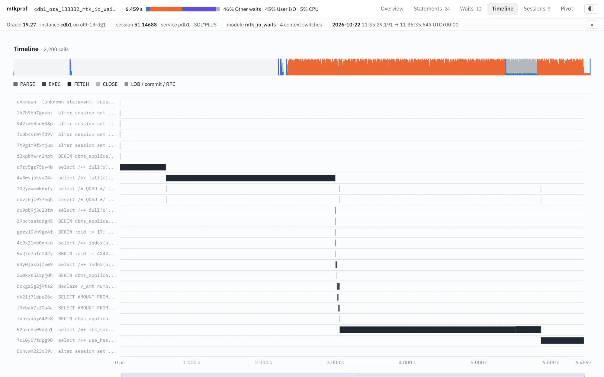
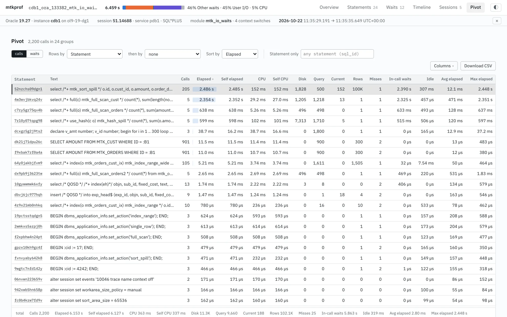

Command line
One static binary. Report, pivot, CSV export, compare.
$ mtkprof report trace.trc -top 20 $ mtkprof pivot trace.trc -by event $ mtkprof compare a.trc b.trc
Response time by statement, execution, session and time window. Call and wait totals match tkprof.
Intel Mac .dmg · 12.0 MB CLI binary: Apple Silicon · Intel
$ curl -fsSL https://raw.githubusercontent.com/davidbudac/modern-tkprof/main/install.sh | shDebian and Ubuntu .deb · 12.2 MB CLI binary: x64 · arm64
$ curl -fsSL https://raw.githubusercontent.com/davidbudac/modern-tkprof/main/install.sh | shv0.5.0 · AIX, Solaris and checksums on the release page · unsigned builds: first start
| Question | tkprof | mtkprof |
|---|---|---|
| Call statistics, library cache misses, waits per statement | yes | yes, same numbers |
| Resource profile (CPU + waits + unaccounted-for) | no | per trace, statement, session or time window |
| Per-execution detail and binds | no | every EXEC with fetches, waits, binds; compare two |
| Statement ranking | recursive SQL listed apart | includes recursive children and idle time between calls |
| Time window | no | timeline; a selected window filters every view |
| Split files, several sessions, PX slaves | one file at a time, trcsess first | files and folders as one trace; slaves attached to the coordinator |
| Compare two traces | no | mtkprof compare, matched by sql_id |
| A 10 GB trace | totals only | constant memory, drill-down |
| Output | text | text, HTML, desktop app, CSV, JSON |
Same parser and numbers in all three.
One static binary. Report, pivot, CSV export, compare.
$ mtkprof report trace.trc -top 20 $ mtkprof pivot trace.trc -by event $ mtkprof compare a.trc b.trc
A self-contained HTML file, or the same UI served locally.
$ mtkprof html trace.trc $ mtkprof serve trace.trc http://127.0.0.1:8046/
Tabs, raw trace lines, notes, fetching over ssh or from the database.
$ mtkprof open trace.trc # or double-click a .trc file
Ranked by response time, including recursive children and idle time between calls. Per statement:

Every call of every statement. A selected window filters the profile, statements, waits and pivot.
trcsess)
Calls or waits grouped by statement, event, object, plan hash, module or time bucket; CSV export. mtkprof pivot takes up to four dimensions.

Any number of files and directories: split traces joined, sessions side by side, PX slaves attached to their coordinator.
mtkprof compare a.trc b.trc: statements matched by sql_id, ranked by change
mtkprof mcp exposes the analysis as tools to Claude Code or any MCP client.
claude mcp add mtkprof -- mtkprof mcp> The job traced in io_waits.trc felt slow. What did it spend its time on, and which statement is to blame? ● mtkprof · open_trace io_waits.trc ● mtkprof · statements limit 5 ● mtkprof · statement 52nzchs09dgn1 ● mtkprof · statement 4w3wvjbkvq24v 6.46 s, almost all of it waiting: enq: KO - fast object checkpoint 2.96 s direct path write temp 2.88 s 1,607 writes CPU 0.34 s 52nzchs09dgn1 is the main culprit: a sort of all 100,001 rows of mtk_orders spilled to temp, 2.38 s of direct path write temp. 4w3wvjbkvq24v, a scan of mtk_cust, spent 2.32 s in a single KO wait; its own I/O took 1.2 ms. …
Default mode keeps everything in memory (up to 1–2 GB of trace). The other modes keep less or spill to disk; the numbers are the same.
| Mode | What it keeps | Measured |
|---|---|---|
| default | everything: calls, waits, binds, drill-down | 1 GB trace: about 7 s and 2 GB of memory for the HTML report |
-lowmem | everything except bind values | every other number identical |
serve -facts=false | model on the server; the browser asks for group-bys and details | 118 MB trace: browser loads a few hundred kB |
serve -spill | calls, waits and binds in temp files about the size of the trace; full drill-down | 1 GB trace: 66 MB RSS, Pivot in about 0.3 s |
-aggregate | aggregates only: profiles, statements, sessions, findings | 10 GB trace: about 0.5 GB, 32 s |
Native shell around the same engine. Reopened traces load from a cache in about a second.

.trc association. Cache keyed by content.~/.ssh/config, agent and bastions.tkprof layout, resource profile first, statements ranked by elapsed time.
mtkprof v0.4.0 - Oracle SQL trace profile ======================================================================================================================== Database : Oracle 19.27.0.0.0 instance cdb1 node ol9-19-dg1.localdomain (Linux x86_64) Session : 51.14688 service pdb1 module mtk_io_waits action start client id mtk_client_io_waits container 3 Span : 2026-10-22 11:35:29.191 +00:00 -> 2026-10-22 11:35:35.649 +00:00 (6.459 s) Volume : 16,428 lines (1.6 MB) calls 2,200 waits 9,615 cursors 25 statements 24 bind sets 612 plans 12 RESOURCE PROFILE - whole trace (response time = trace span; CPU of top-level calls; every wait) ------------------------------------------------------------------------------------------------------------------------ Component Seconds % Count Avg ms Max ms Class enq: KO - fast object checkpoint 2.957 45.8% 3 985.641 2323.426 Application direct path write temp 2.881 44.6% 1,607 1.793 7.945 User I/O CPU 0.337 5.2% SQL*Net message from client (idle) 0.319 4.9% 328 0.972 3.120 Idle direct path read temp 0.014 0.2% 6,943 0.002 0.097 User I/O ... unaccounted-for -0.061 -0.9% ------------------------------------------------------------------------------------------------------------------------ Total response time 6.459 100.0% STATEMENTS BY ELAPSED (elapsed includes recursive children and idle between calls) ------------------------------------------------------------------------------------------------------------------------ # Elapsed s % Self s CPU s Execs Rows Disk Query SQL ID Dep Statement 1 2.793 43.2% 2.485 0.152 1 100,001 1,828 500 52nzchs09dgn1 0 select /*+ mtk_so... 2 2.355 36.5% 2.352 0.029 1 1 1,205 1,218 4w3wvjbkvq24v 0 select /*+ full(c... 3 0.638 9.9% 0.638 0.005 1 1 496 498 c7ry5gr75qv4b 0 select /*+ full(o...
Install script: Linux, macOS, AIX, Solaris; verified against SHA256SUMS. Windows: the .exe. No database connection needed.
$ curl -fsSL https://raw.githubusercontent.com/davidbudac/modern-tkprof/main/install.sh | sh
Waits, binds, plan statistics per execution.
alter session set tracefile_identifier = 'mytest';
alter session set events 'sql_trace
wait=true, bind=true,
plan_stat=all_executions';
-- ... run the workload ...
alter session set events 'sql_trace off';
select value from v$diag_info where name = 'Default Trace File';
Text and HTML reports are written next to the trace.
$ mtkprof cdb1_ora_4711_mytest.trc wrote cdb1_ora_4711_mytest.trc.txt wrote cdb1_ora_4711_mytest.trc.html